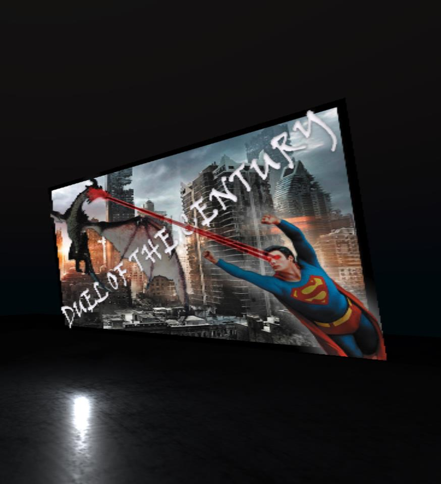
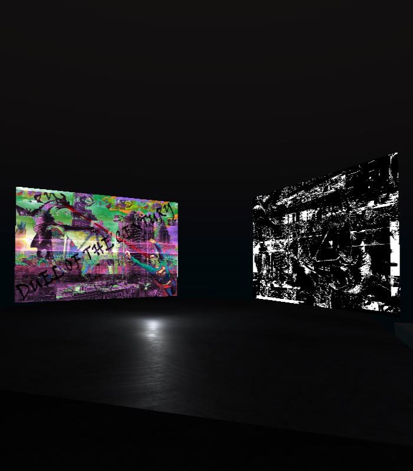
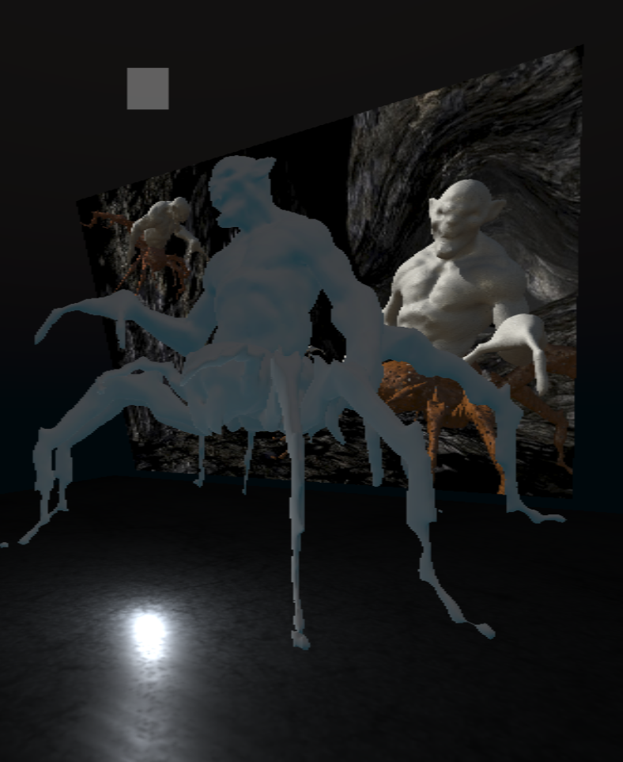
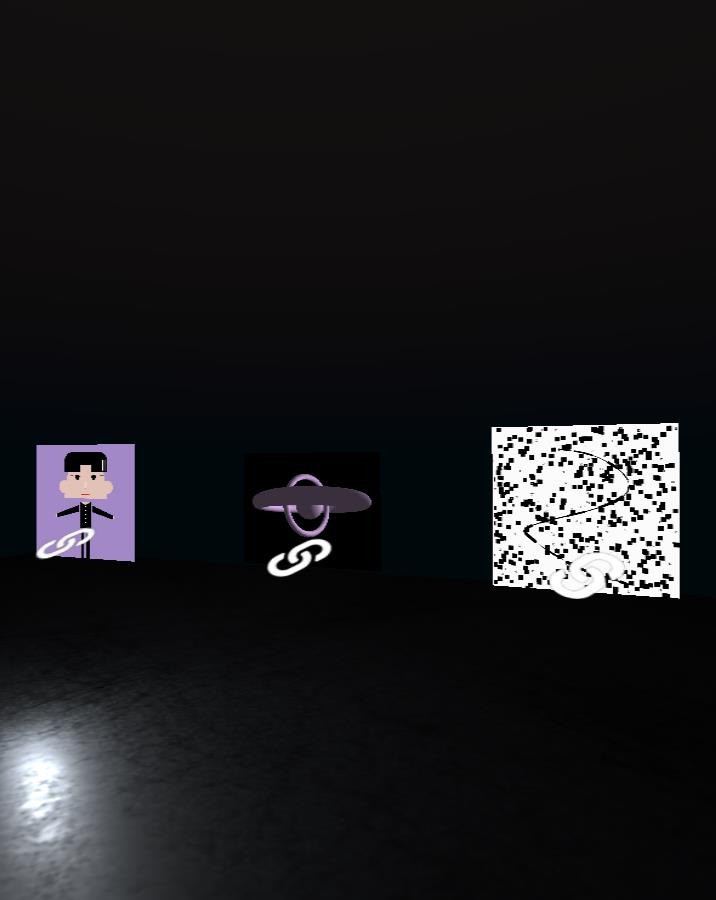
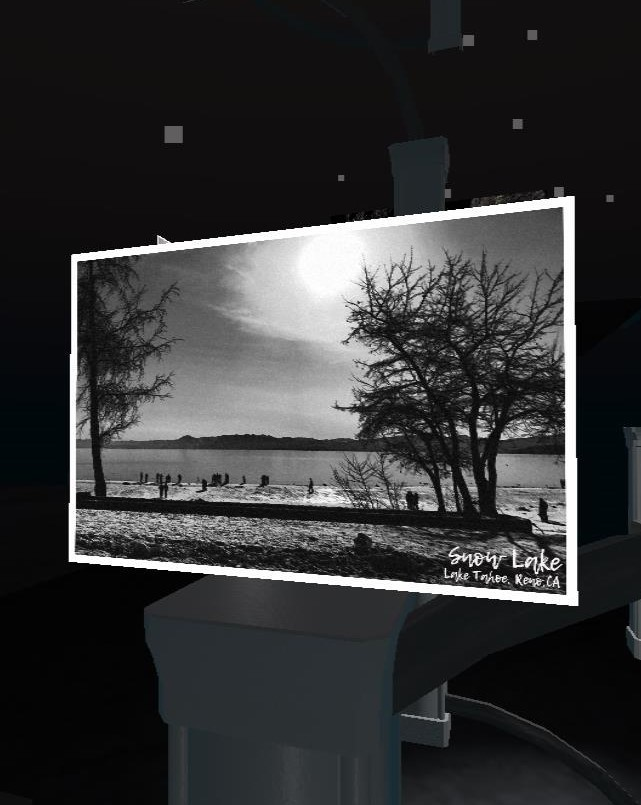
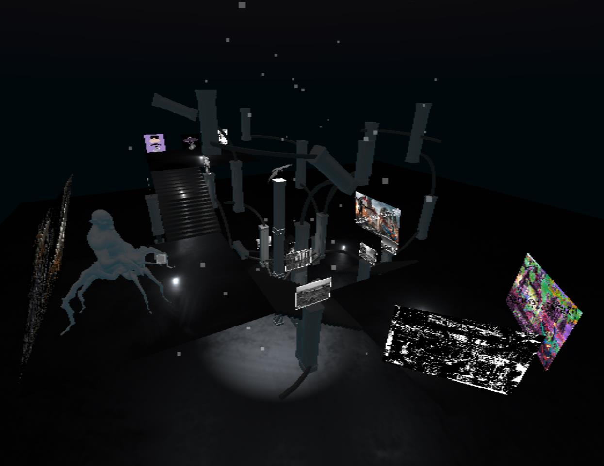
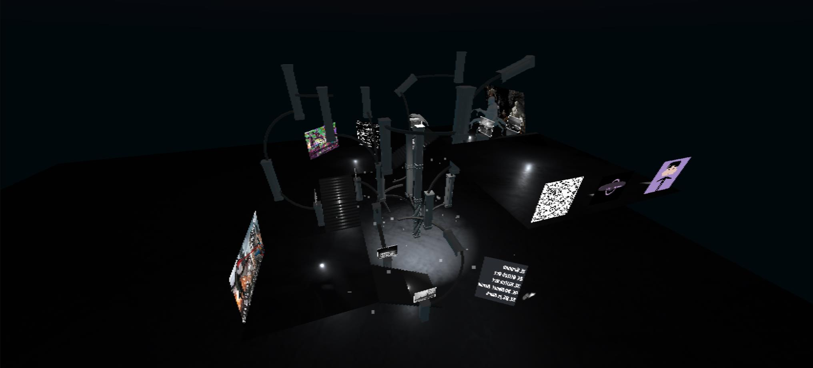

Vorsen Zhen
The Whole Secene
As for the theme of this work, my idea is to design a 3D gallery to put my works together. This Gallery will be continued to follow my design style in black and white, which is to let audience feel that the result of the combination of black and white color and light effect can be very wonderful. I prefer the expressive power of black and white to bright colors. Black and white summarizes the multifarious and ever-changing natural ecology in one body, giving people rich imagination and endless aftertaste. Therefore, I think black and white design has a unique way of expression and plays a very important role in art design. And that's what I've been trying to develop in the art world.





I would design a multi-storey open building and put my work on each floor.I would connect each floor with a staircase that would form an upward circular corridor.I will use a lot of lighting effects to give the audience a visual enjoyment of light and shadow.
My body of work will be created in the Mozilla Hub application.The model I use will be the free model posted on the Sketchfab site. The whole building will have five or six floors to hold. I have my works on every floor. As an open building, each floor is surrounded by walls of air or glass. In order to highlight the advantages of the open building, I would place some models outside each floor and staircase to increase the visual stimulation of the viewers. For visitors, there is only one continuous upward tour route for the exhibition, which aims to enable the audience to gradually see the full view of the Gallery.

